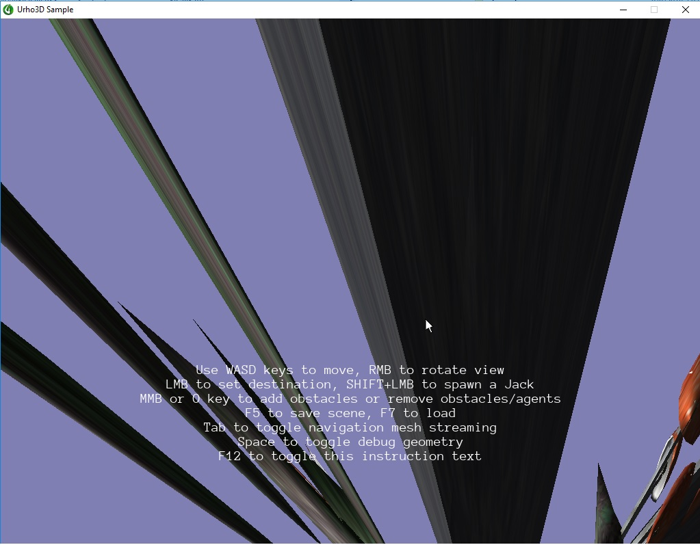

Hello urho world !
I’m trying to compile and test Urho for the first time, So I grabbed the source code, compiled using codelite and everything worked fine, until I run a sample.
textures and models seems to be loaded correctly, but i get this weird output

I have the same result for every program i run after compiling myself, downloaded binary sample for windows works fine, any ideas on what can cause this ?
I followed this : https://github.com/urho3d/Urho3D/wiki/Compiling-Urho3D-on-Windows
Env :
windows 10 64b
codelight IDE 12
urho 1.7 latest downloaded from source forge
Compiler : mingw 8.1
Graphic card : GTX 1060